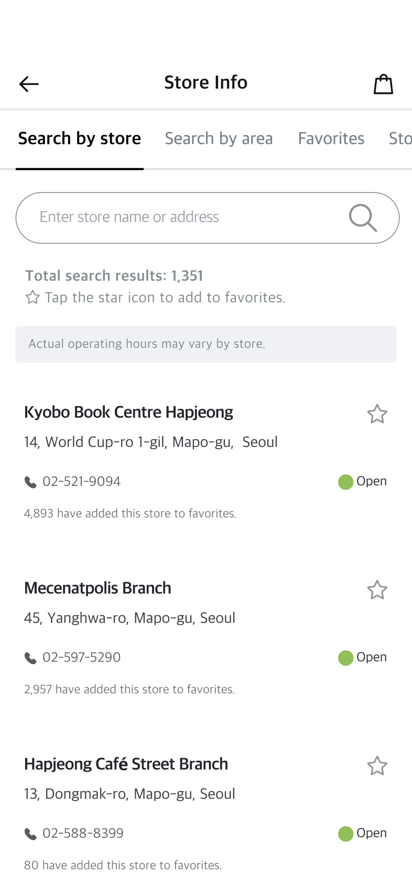
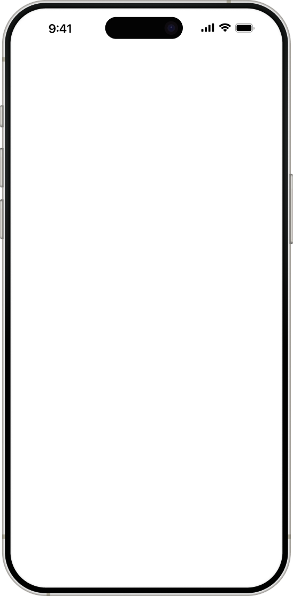
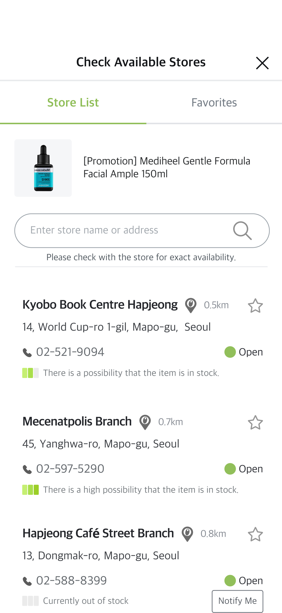
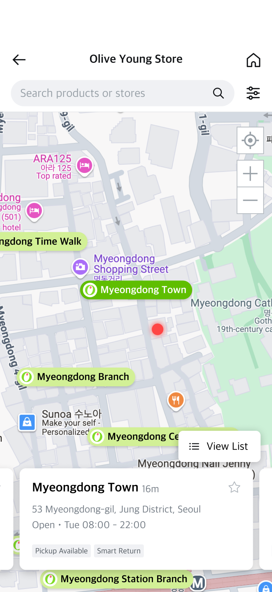

Outdated
The store finder had not evolved for years, leaving its UI, usability, and design system alignment behind the rest of the app.

Contributions
Problem


Outdated
The store finder had not evolved for years, leaving its UI, usability, and design system alignment behind the rest of the app.
Fragmented
Store information was scattered across screens, with no clear connection between discovery, inventory, and pickup.

Unclear
Vague stock labels and poor hierarchy made it hard for customers to feel confident about availability.
Why It Mattered
Customer behavior
Unsure if the product was available nearby
Had to call stores for simple stock checks
Could hesitate, delay purchase, or drop off
Store staff behavior
Handled calls on top of store operations
Sometimes missed calls during busy hours
Led to sales loss or poor CX
Key user groups
 Store Staff
Store Staff
* Data and store feedback showed strong usage patterns among local Korean customers, especially women in their 20s and 30s searching for cosmetics availability.
Goals
User Goal
Service Goal
Business Goal
Success Metrics
Design Explorations
I explored multiple UX directions based on the user, service, and business goals, then validated the options through user testing. The selected direction best supported location-based discovery, clearer stock visibility, and pickup decisions in one coherent flow.
Final Solution

Result
By connecting product interest, store availability, and pickup actions in one flow, the renewed store finder helped customers check availability more often, reduced avoidable store inquiries, and converted store discovery into pickup orders.
32.9%
Availability Page Views
18%
Inquiry call volume
~11%
Pickup conversion
Reflection
Strength
This project expanded my ability to manage complex product work across legacy systems, map UX constraints, and operational dependencies.
Area of Growth
I would define more granular tracking earlier to better understand user hesitation across the store-to-pickup journey and prioritize future improvements faster.